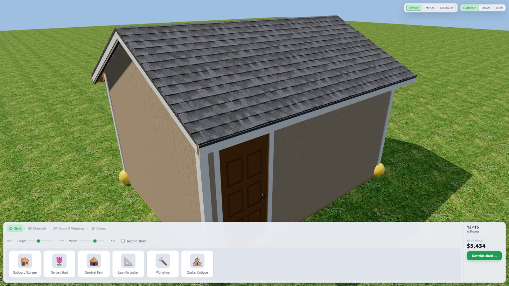
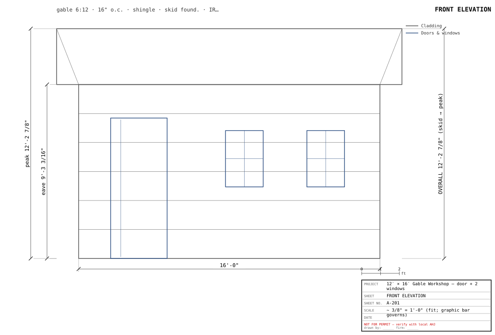
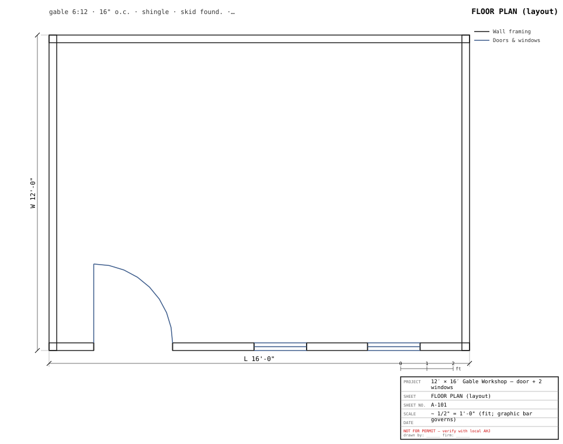
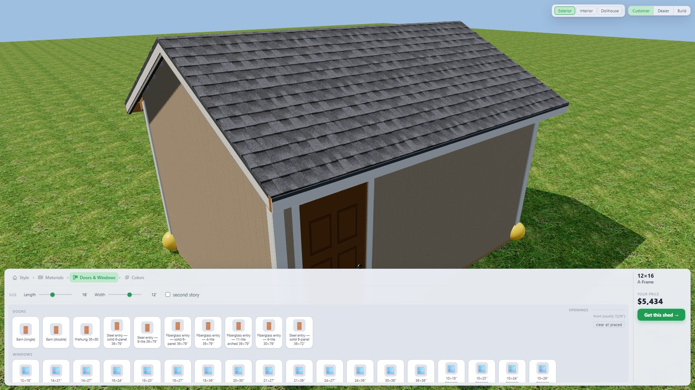
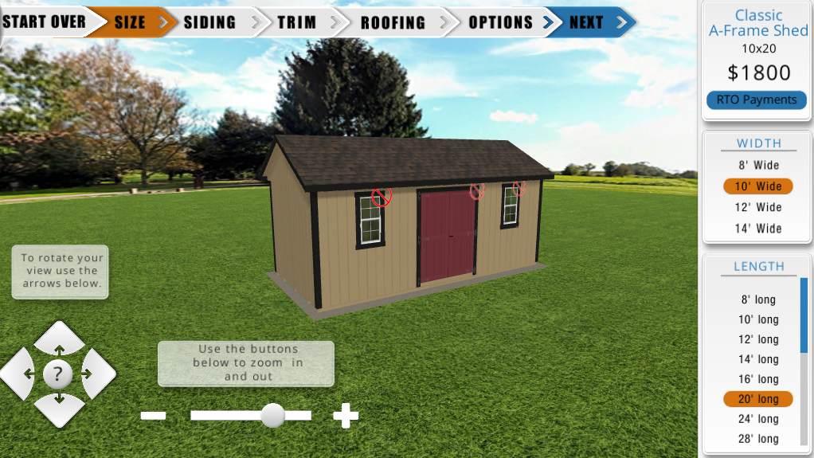

Parametric Shed Engine
Dimensions and options go in. A 3D model, a bill of materials, and a cut list come out. This is a 2026 web-native rebuild of the shed domain I first shipped as a commercial configurator in 2012.
The engine is zero-dependency TypeScript (it runs on Node's native TypeScript support, with no install and no build step). It covers the full framing stack from foundation to roof, and it is checked by over 14,000 automated tests (as of late August 2026; the count grows with the build). The viewer is a Three.js WebGL scene on top of it.
It is a prototype. The build is active, the repo is private, and the live demo is pending UX cleanup. A quote-to-cash layer landed in late August: a double-entry ledger, two-party books, and server-side pricing, with its customer-facing screens still in QA.

Dimensions and options in. Model, materials, and cuts out.
Everything below is deterministic code (plain rules that can't invent anything). Given the same inputs, the engine produces the same building, the same parts list, and the same cut list every time.
The engine takes a width, a length, a wall height, a roof style, and a set of options, and produces the framing for the whole building in order: foundation, then floor, then walls, then roof. Each stage is a module that reads the stage before it and writes typed geometry the next stage can consume.
Roofs come in gable, gambrel, and hip forms. Doors and windows are placed as real openings with headers and jack studs, and rendered with per-pixel materials in the viewer. A two-storey option adds a second floor with real stairs. Stair and guard framing follow IRC rules (the International Residential Code, the model code most US jurisdictions adopt for houses and outbuildings), and a load-path check confirms that every bearing member has something under it.
A separate regulatory.ts module classifies the building's likely permit and structural class from its size, storeys, and eave height. Its job is to label. A heavier or taller building is a valid design the engine reports on, and the roadmap includes those cases on purpose. The label is for the human reading it; a local code check still has to happen separately.


Over 14,000 automated checks (as of late August 2026), plus a typecheck, a viewer smoke test, and a hermetic server test that plants a fault and confirms it is caught.
Dozens of modules with a machine-enforced acyclic dependency graph (a check that fails the build if any module imports in a circle). Each module carries a header contract stating what it reads and writes.
The engine began as one 2,357-line file. It was decomposed into the current modules with the tests holding behavior fixed across the move.
A Three.js scene over the engine's output
The viewer renders whatever the engine produces. It holds no building logic of its own, so a change to a framing rule shows up in the 3D view without a change to the viewer.
The viewer is a WebGL scene built with Three.js. Presets, size sliders, roof choice, and openings drive the engine; the engine returns geometry and a parts list; the viewer draws it and shows the price for that configuration. Doors and windows use per-pixel materials so trim, glass, and panel read as separate surfaces at close range.
Two rounds of performance and accessibility work went into it. The first placement of a building used to stall for 1,328 ms; it now takes 27 ms. Drag frames used to take 65 to 80 ms each; they now take 3 to 10 ms. About 4 MB was removed from the download. Text elements under 14 px and WCAG-AA contrast failures were both brought to zero.
The interface is still prototype-grade. The live demo will be linked here once the UX cleanup lands; until then, demo pending.

Agents write the code. I design the system and gate what lands.
This is my production function on this project, stated plainly. It is also the part of the work I would carry to any other codebase.
The code in this engine was written by AI coding agents. I wrote the system design, the module contracts, the test strategy, and the landing gate that every change has to pass before it is merged. When a change fails the gate, it does not land, whatever the agent's summary says about it.
The gate has four parts. First, independent re-verification: a separate driver re-runs the whole suite rather than trusting the agent's report that it ran green. Second, a diff read: I read what changed, not the description of what changed. Third, a mutation-audit shard on every new test: the test is run against a deliberately broken version of the code it claims to cover, and a test that can't fail is treated as no test. Fourth, receipts: each landed change carries the commands that were run and their output, so a later reader can see what was checked.
Work runs in parallel across multiple agents, each in its own git worktree (a separate checkout of the same repo, so agents do not overwrite each other). External multi-model code review is part of the method too: on a sibling project, four frontier models produced 90 raw findings, 31 unique, 24 confirmed, and 20 were fixed, including a real secrets-on-disk defect the in-house checks had missed.
My role, and where it stops
I own the architecture, the module boundaries, the test gate, the acceptance decisions, and the domain rules (what a shed is, how it frames, what the code requires). I decide what lands. I read diffs and I re-run suites.
I did not hand-write the bulk of the TypeScript in this repository, and I do not present it as if I had. The agents wrote it against my contracts and under my gate. Where a description of this project says "I built," read it as "I designed and gated, and agents implemented."
The test count is the floor the gate enforces. The mutation audit is the reason that number means more than a count: every new test has been shown to fail when the behavior it guards is broken.
The same domain, rebuilt from scratch
The first era was a production business system. The second era is a rebuild of what that system knew about sheds, on a stack that runs in any browser and depends on no engine vendor.

The 2012 to 2022 commercial configurator and custom CPQ system was a Unity/WebGL application tied to a Drupal/PHP back end. Over its production life it processed 10,000+ quote, order, and rent-to-own transactions tied to tens of millions of dollars in shed sales. It was pre-LLM: a rules engine, written by hand, and I owned the configurator and CPQ layer of it. Its full case study is on the linked page.
The 2026 engine is a rebuild of the domain that system encoded, started from an empty repository on 2026-06-26. It is engine-agnostic: the framing logic has no dependency on Three.js or on any renderer, and the viewer is one consumer of it. In late August the engine gained its own quote-to-cash layer: a double-entry ledger, two-party books, and server-side pricing, with the customer-facing screens still in QA. A dealer-facing service exists but is not public.
What carries across the two eras is the domain knowledge and the way I now hold the code to account. The first system taught me that product rules, pricing assumptions, and process decisions have to be explicit and testable to stay maintainable. The second system is built with that as its first requirement, and with agents doing the typing.
The limits, stated at the same size as the claims
Prototype. The engine's framing logic is well covered by tests. The viewer's interface is not finished and is being cleaned up before it is shown live.
The quote-to-cash screens are in QA. The ledger, two-party books, and server-side pricing are built and test-covered; the customer-facing order screens have not had a human QA pass yet, so the demo does not show them.
Demo pending. A hosted build exists behind a gate. It will be linked from this page when the UX is ready.
Repo private. Code snippets and the test count can be shown on request. A dealer-facing service built on the engine is also not public.
Regulatory output is a classification. The regulatory.ts module reports a likely permit and structural class. A local code check still has to happen separately, and the engine builds whatever the label says.
Related work
The engine sits at the intersection of two threads in my work: configurable physical products turned into software, and AI-agent output held to an explicit, testable gate.